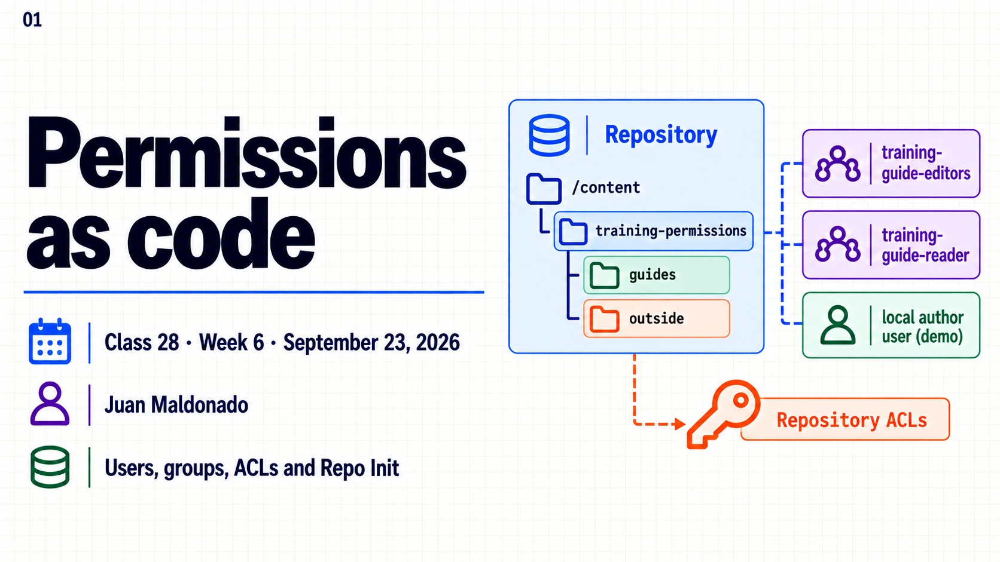
Topic summary
Repository access depends on the identity, the target resource and the operation. Human authentication on Cloud Author uses IMS, while AEM permissions govern content actions. A service user gives application code a technical repository identity. Groups let teams assign shared responsibilities without maintaining separate ACLs for every person.
This session models a small permission boundary with Repo Init. A group can read a demonstration tree and modify properties under one child folder. A separate service user receives a reading grant. Inspect the configured entries and inherited access before comparing an allowed operation with one outside the intended scope. A narrow grant alone cannot remove privileges supplied by another group or ancestor.
- Separate authentication from authorization on repository resources.
- Use groups for shared human responsibilities and service users for specific code tasks.
- Choose privileges and paths that match the operation.
- Inspect all relevant principals, inherited entries and restrictions.
- Version paths, identities and ACLs with Repo Init.
- Check both allowed operations and operations outside the intended scope.
30-minute agenda
| Time | Slides | Focus |
|---|---|---|
| 0–5 | 1–3 | Identities, Cloud access and authorization. |
| 5–11 | 4–6 | ACL entries, least privilege and effective access. |
| 11–23 | 7–9 | Repo Init and the prepared local configuration. |
| 23–27 | 10 | Expected checks and unexpected outcomes. |
| 27–30 | 11–12 | Key takeaways and questions. |
For a 60-minute session, add 20 minutes of guided setup and inspection, then 10 minutes of questions. The instructor supplies a prepared fixture. Class 29 covers subservice mappings and ResourceResolver ownership.
Complete slide deck
Copy each complete numbered image to PowerPoint or download its PNG.
{kind=link}
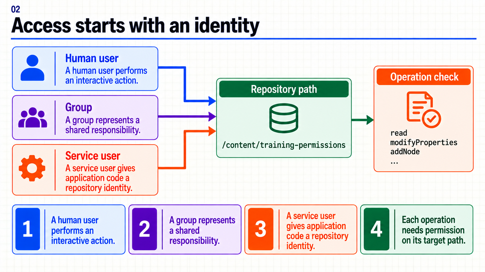
{kind=link}
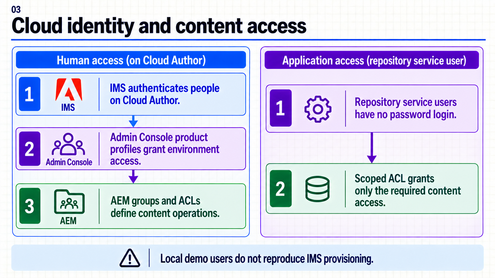
{kind=link}
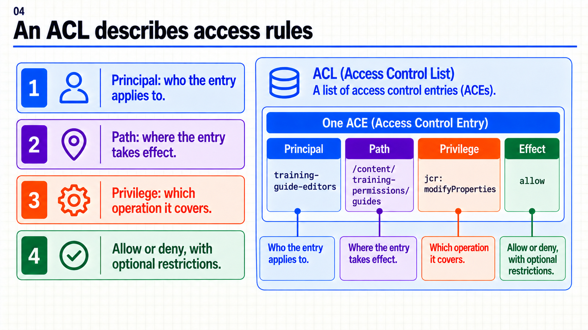
{kind=link}
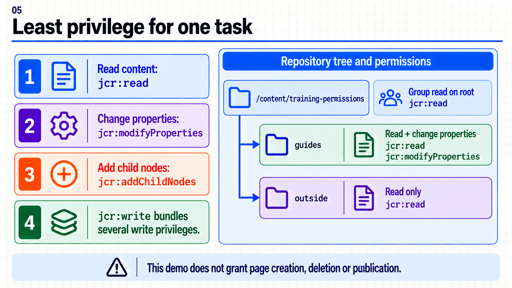
{kind=link}
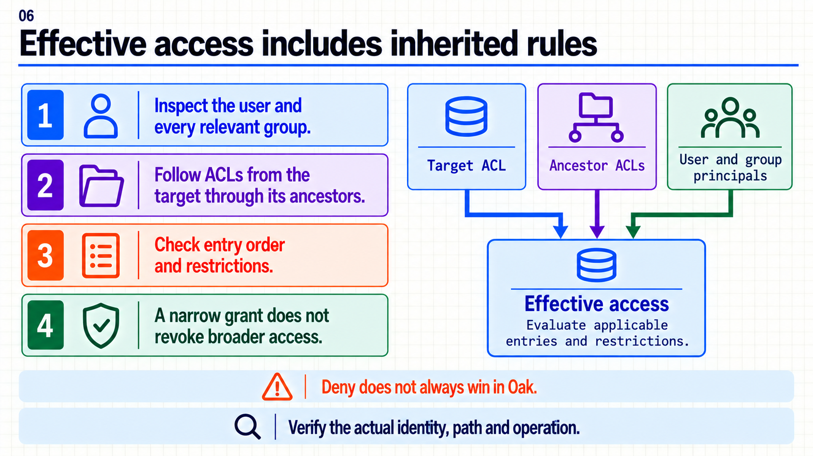
{kind=link}
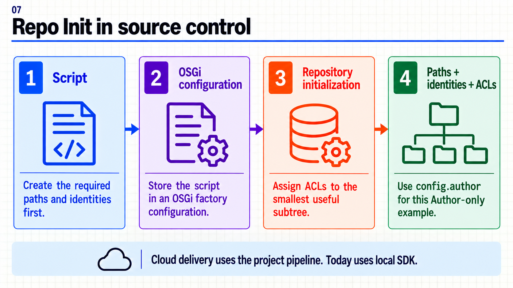
{kind=link}
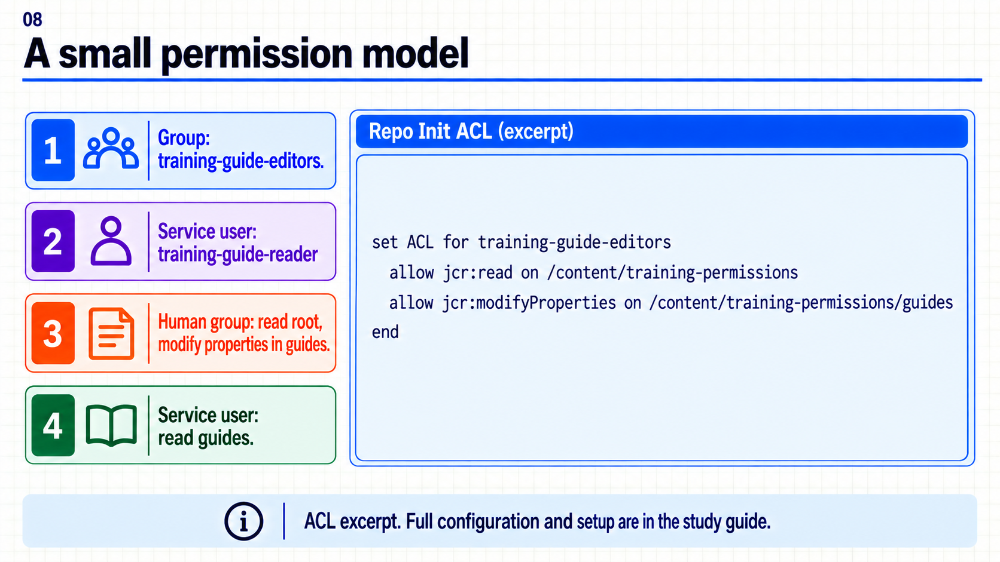
{kind=link}
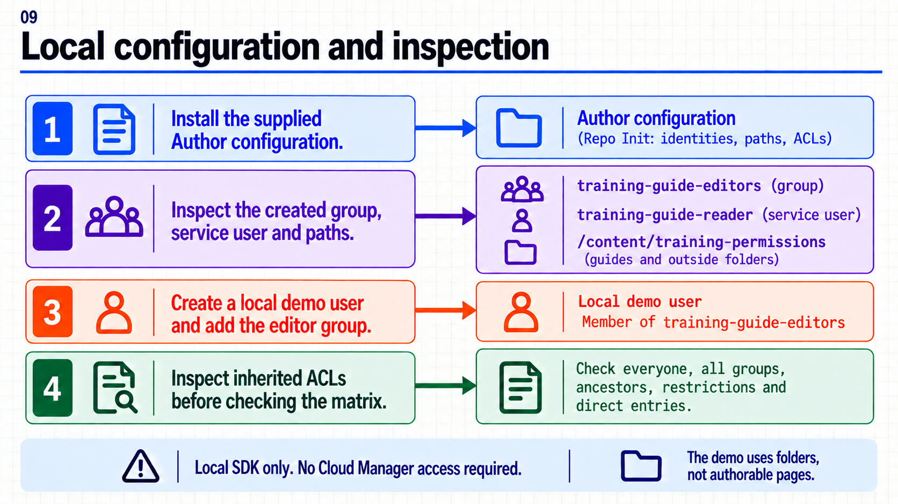
{kind=link}
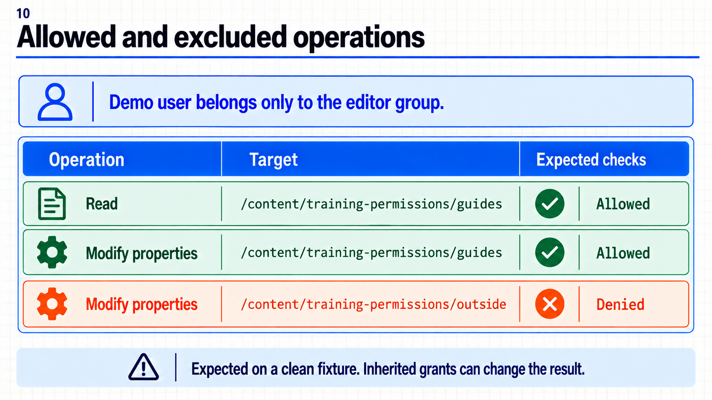
{kind=link}
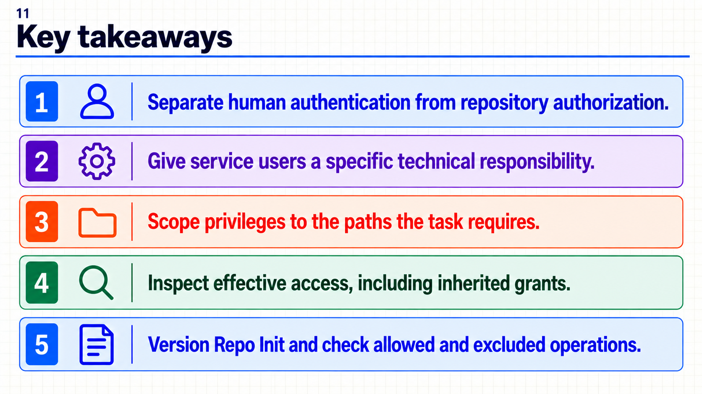
{kind=link}
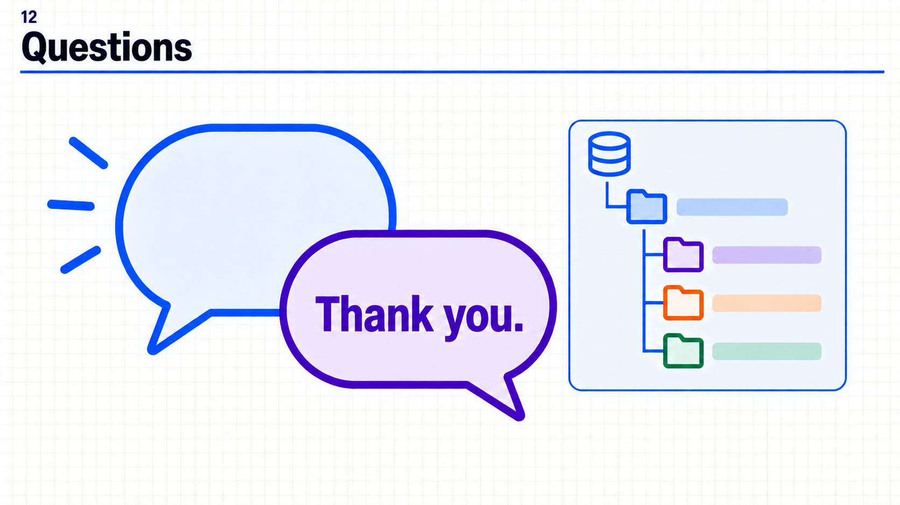
{kind=link}
Repo Init y comprobación local
Consulta la explicación de ACL y acceso efectivo antes de interpretar las reglas.
3. Ejemplo completo en Author local
A. Punto de partida independiente
Necesitas un SDK Author local, una cuenta administradora para preparar la demo y un proyecto WKND o Archetype con ui.config. No necesitas Cloud Manager ni las páginas de las sesiones 26 y 27.
- Inicia sesión como administrador en
http://localhost:4502. - Comprueba que
/content/training-permissionsy los IDstraining-guide-editors,training-guide-reader,training-permissions-demono correspondan a trabajo ajeno. Usa otro prefijo en todo el ejemplo si ya existen. - Conserva la sesión de administración separada de la del usuario de prueba. No uses
adminpara demostrar mínimo privilegio. - La demo creará dos carpetas
sling:Folder:guidesyoutside. No son páginas ni aparecerán como páginas editables de Sites.
B. Leer el script completo
Descargar permissions.repoinit
create path (sling:Folder) /content/training-permissions
create path (sling:Folder) /content/training-permissions/guides
create path (sling:Folder) /content/training-permissions/outside
create group training-guide-editors
create service user training-guide-reader with forced path system/cq:services/training
set ACL for training-guide-editors
allow jcr:read on /content/training-permissions
allow jcr:modifyProperties on /content/training-permissions/guides
end
set ACL for training-guide-reader
allow jcr:read on /content/training-permissions/guides
end
El grupo recibe lectura en la raíz del ejemplo y modificación de propiedades en guides. outside es un hermano, por lo que esa concesión de modificación no se hereda allí. La ACL del service user concede lectura en guides; su acceso efectivo debe revisarse según el modo de autenticación utilizado. No afirmamos que sea incapaz de leer cualquier otro recurso por el solo hecho de tener esta regla.
Usamos ACL basadas en recursos (set ACL), almacenadas en los recursos objetivo. No las confundas con set principal ACL o ensure principal ACL: son instrucciones para otro modelo de políticas. Aquí no hacen falta para enseñar el alcance del permiso. Control de acceso basado en recursos — Oak.
create path permite usar el ejemplo con parsers antiguos del SDK: crea los nodos que faltan, sin cambiar el tipo de los existentes. Sling actual lo considera obsoleto y recomienda ensure nodes, que comprueba/ajusta el estado con semántica distinta. No reemplaces la instrucción sin revisar la versión del bundle y sus tipos de nodo. Repo Init y compatibilidad — Sling.
C. Instalar la configuración
Copia el archivo completo en tu proyecto WKND:
ui.config/src/main/content/jcr_root/apps/wknd/osgiconfig/config.author/org.apache.sling.jcr.repoinit.RepositoryInitializer~training-permissions.cfg.json
{
"scripts": [
"create path (sling:Folder) /content/training-permissions\ncreate path (sling:Folder) /content/training-permissions/guides\ncreate path (sling:Folder) /content/training-permissions/outside\n\ncreate group training-guide-editors\ncreate service user training-guide-reader with forced path system/cq:services/training\n\nset ACL for training-guide-editors\n allow jcr:read on /content/training-permissions\n allow jcr:modifyProperties on /content/training-permissions/guides\nend\n\nset ACL for training-guide-reader\n allow jcr:read on /content/training-permissions/guides\nend\n"
]
}
- Para Archetype, cambia
/apps/wkndpor la raíz de aplicación de tu proyecto y conserva el PID y el sufijo de instancia~training-permissions. El árbol/content/training-permissionspuede mantenerse. scriptscontiene un string con el script entero. Los\nson saltos de línea escapados en JSON; no separes las líneas de un bloque ACL en scripts independientes.- Usa el perfil Maven local de tu baseline para construir e instalar. En un WKND estándar suele ser
mvn clean install -PautoInstallSinglePackage, ejecutado desde la raíz del proyecto AEM, no desde este repositorio de formación. Conserva las opciones Java/SDK y autenticación documentadas por tu baseline. - En OSGi Configuration Manager local, busca
org.apache.sling.jcr.repoinit.RepositoryInitializery la instanciatraining-permissions. Comprueba el script efectivo sin guardar cambios manuales adicionales. - Revisa
crx-quickstart/logs/error.logsi faltan nodos o identidades: buscarepoinit,RepositoryInitializery los IDs del ejemplo. La presencia del archivo en/appsno demuestra que el script se haya aplicado.
El directorio config.author limita esta configuración a Author. En Cloud se distribuye como código mediante el pipeline del proyecto; no se propone editar producción desde una consola. Configuración OSGi — Adobe, Repo Init en despliegues — Adobe.
D. Inspeccionar identidades y ACL
- En CRXDE Lite local, abre
/content/training-permissionsy sus dos carpetas. Confirma sus tipossling:Folder. - En Tools → Security → Groups, busca
training-guide-editors. - En Tools → Security → Users, busca
training-guide-reader. También puedes inspeccionar/home/users/system/cq:services/trainingen CRXDE. Verifica que la identidad creada searep:SystemUser. Su ubicación organiza la identidad, no concede permisos sobre contenido. - En Tools → Security → Permissions, busca el grupo y comprueba sus dos entradas: lectura en la raíz y modificación en
guides. Busca el service user y su entrada de lectura enguides. - Cuando tu SDK tenga Node View, selecciona las rutas y revisa también las ACL de sus antecesores. En Audit View o la vista filtrada equivalente, selecciona usuario/ruta e incluye las membresías de grupo. Los nombres y disponibilidad de estas vistas dependen del SDK.
La vista por principal lista entradas asignadas; por sí sola no es una ejecución con esa identidad. Si tu SDK no tiene Audit View, inspecciona ACL y antecesores mediante el panel Access Control de CRXDE; identifica los principales de cada entrada y las membresías por separado. No presentes esa inspección como una prueba de guardado. Vistas de permisos — Adobe.
E. Comprobar el alcance con una persona local
- Como administrador, abre Tools → Security → Users → Create User y crea
training-permissions-demo. Define una contraseña local fuera de los archivos del curso. - Añádelo a
training-guide-editorsdesde la administración del usuario/grupo y guarda. No lo añadas aadministrators,content-authorsni a otro grupo con escritura; revisa también membresías automáticas yeveryone. - Inspecciona sus ACL aplicables en
guidesyoutside. Usa esta matriz para anticipar la operación, antes de intentarla.
| Identidad | Operación | Ruta | Expectativa en el fixture sin otros grants de escritura |
|---|---|---|---|
training-permissions-demo |
Leer | /content/training-permissions/guides |
Permitido. |
training-permissions-demo |
Modificar una propiedad | /content/training-permissions/guides |
Permitido. |
training-permissions-demo |
Modificar una propiedad | /content/training-permissions/outside |
Denegado. |
Comprobación operativa, si CRXDE está accesible al usuario local: abre un perfil/ventana privada, inicia sesión explícitamente como training-permissions-demo y verifica la identidad mostrada. En CRXDE, selecciona guides, añade la propiedad String trainingNote con valor demo y pulsa Save All. Debe guardarse. Selecciona outside, intenta añadir la misma propiedad y guardar: debe fallar por autorización. Descarta/refresca los cambios pendientes después del fallo. Desde la sesión administradora comprueba que la propiedad existe sólo en guides.
Si CRXDE o sus recursos de interfaz no están accesibles a esa identidad, no amplíes los permisos para forzar la demo. Completa la inspección de ACL y deja la ejecución como pendiente; el instructor puede mostrar su SDK preparado. Un bloqueo de interfaz no demuestra por sí solo una ACL de escritura incorrecta. Tampoco un HTTP 403 identifica automáticamente la causa: la sesión 29 separará identidad, ACL y protección HTTP.
Resultados esperados, no ejecución registrada: el material no se instaló en tu SDK durante su preparación. Una operación inesperadamente permitida requiere revisar otras concesiones. Una operación inesperadamente denegada requiere revisar identidad, aplicación del script, ruta y restricciones. No se “corrige” dando privilegios de administrador.
F. Repetición y cambios posteriores
Reinstala la misma configuración y comprueba que conservas los mismos IDs y entradas previstas. La intención de Repo Init es declarar un estado repetible, pero no es un reconciliador que borre todo lo que ya no aparece. Quitar un allow del archivo o desinstalar la configuración no garantiza revocar la ACE existente. La retirada requiere una modificación explícita y revisada de las reglas que posea tu aplicación, seguida de la misma comprobación de alcance.
No incluyas un borrado de /content ni de ACL compartidas en una “limpieza”. Para repetir desde cero utiliza otro prefijo de demo o un SDK desechable. Conserva las identidades y permisos de otras funcionalidades.